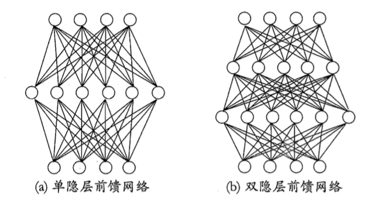

神经元模型
在生物学神经网络中，每个神经元与其他神经元连接，当它“兴奋”时，就会向相邻的神经元发送化学物质，从而改变这些神经元的电位，如果某神经元的电位超过一个阈值，那么它就会被激活（兴奋），向其他神经元发送化学物质。
1943年，McCulloch and Pitts基于生物神经元模型抽象出了我们熟知的M-P神经元模型。神经元接收来自n个其他神经元传递来的输入信号，这些输入信号通过带权重的连接进行传递，神经元接收到的总输入值将与神经元的阈值进行比较，然后通过激活函数处理以产生神经元的输出。
理想中的激活函数应该是将任意输入值映射为0（抑制）或1（兴奋），即阶跃函数。但是阶跃函数具有不连续、不光滑等不好的性质。因此，实际中经常使用sigmoid函数作为激活函数，它把可能在较大范围内变化的输入值挤压到了$(0, 1)$熟出值范围内（也叫挤压函数）。
把许多个这样的神经元按一定的层次结果连接起来，就得到了神经网络。
感知器与多层网络
感知器
感知器（perceptron）由两层神经元组成，输入层接收外界信号后传入输出层（一个M-P神经元）。
感知器能很轻易实现与、或、非运算：
- 与（$x_{1} \bigwedge x_{2}$）：令$w_{1} = w_{2} = 1, \theta = 2$，则$y = f(1 \cdot x_{1} + 1 \cdot x_{2} - 2)$，仅在$x_{1} = x_{2} = 1$时，$y = 1$；
- 或（$x_{1} \bigvee x_{2}$）：令$w_{1} = w_{2} = 1, \theta = 0.5$，则$y = f(1 \cdot x_{1} + 1 \cdot x_{2} - 0.5)$，当$x_{1} = 1$或$x_{2} = 1$时，$y = 1$；
- 非（$not x_{1}$）：令$w_{1} = -0.6, w_{2} = 0, \theta = -0.5$，则$y = f(-0.6 \cdot x_{1} + 0 \cdot x_{2} - (-0.5))$，当$x_{1} = 1$时，$y = 0$，当$x_{1} = 0$时，$y = 1$。
一般地，给定训练集，权重$w_{i}(i = 1,2,\cdots,n)$以及阈值$\theta$都可以通过学习得到（阈值$\theta$可以看作一个固定输入的“哑节点”，所对应的连接权重$w_{n + 1}$，就可以全部统一为权重学习）。
感知器权重调整过程：
$$w_{i} \leftarrow w_{i} + \Delta w_{i}$$
$$\Delta w_{i} = \eta (y - \hat{y})x_{i}$$
$\eta \in (0, 1)$为学习率，$x{i}$用于控制每个$w_{i}$的不同变化率。若感知器预测准确，则$y = \hat{y}$，感知器不发生变化，否则根据错误的程度进行权重调整。
感知器只有一层功能神经元，只能解决线性可分问题，若两类模式是线性可分的，则一定存在线性超平面将其分开，所以只要求得适当的权向量，感知器一定会收敛，但是对于非线性可分问题，感知器就会出现震荡，不能求得合适解，如异或问题。
多层网络
要解决异或问题，需要多层功能神经元，于是就引入了隐含层，隐含层和输出层都是拥有激活函数的功能神经元。
多层网络中每层神经元与下层神经元全互连，同层神经元之间不互连，不相邻层神经元之间不互连，这种神经网络就叫“多层前馈神经网络”（“前馈”并不是信号不能向后传递，是指网络拓扑结构中不存在环或回路）。

神经网络学到的东西，就蕴含在连接权（含激活阈值）中。
误差逆传播（error BackPropagation）算法
给定训练集$D = {(x_{1}, y_{1}), (x_{2}, y_{2}, \cdots, (x_{n}, y_{n}))}, x_{i} \in R^{d}, y_{i} \in R^{l}$（输入是$d$个属性，输出是$l$维实向量），得如下多层前馈网络结构，其中输出层第$j$个神经元第阈值用$\theta_{j}$表示，隐层第$h$个神经元第阈值用$\gamma_{h}$表示。
假设隐层和输出层神经元都使用sigmoid函数（sigmoid函数很多，这里实际是一个对率函数）。
$$y = \frac{1}{1 + e^{-x}}$$
对训练例$(x_{k}, y_{k})$，假定神经网络的输出为$\hat{y}_{k} = (\hat{y}_{1}^{k},\hat{y}_{2}^{k},\cdots, \hat{y}_{l}^{k})$，即
$$\hat{y}_{j}^{k} = f(\beta_{j} - \theta_{j})$$
网络在$(x_{k}, y_{k})$上的均方误差为
$$E_{k} = \frac{1}{2}\sum_{j = 1}^{l}(\hat{y}_{j}^{k} - y_{j}^{k})^{2}$$
易知上面网络中有$(d + l + 1)q + l$个参数需要确定，BP迭代学习算法在每一轮迭代中采用广义第感知器学习规则对参数更新估计，即
$$\upsilon \leftarrow \upsilon + \Delta \upsilon$$
以$w_{hj}$为例
BP算法基于梯度下降，以目标的负梯度方向对参数进行调整，给定学习率$\eta$，则
$$\Delta w_{hj} = -\eta \frac{\partial E_{k}}{\partial w_{hj}}$$
根据链式法则
$$\frac{\partial E_{k}}{\partial w_{hj}} = \frac{\partial E_{k}}{\partial \hat{y}_{j}^{k}} \cdot \frac{\partial \hat{y}_{j}^{k}}{\partial \beta_{j}} \cdot \frac{\partial \beta_{j}}{\partial w_{hj}} $$
显然
$$\frac{\partial \beta_{j}}{\partial w_{hj}} = b_{n}$$
对率函数有
$$f^{‘}(x) = f(x)(1 - f(x))$$
$$-\frac{\partial E_{k}}{\partial \hat{y}_{j}^{k}} \cdot \frac{\partial \hat{y}_{j}^{k}}{\partial \beta_{j}} = -(\hat{y}_{j}^{k} - y_{j}^{k})f^{‘}(\beta_{j} - \theta_{j}) = \hat{y}_{j}^{k}(1 - \hat{y}_{j}^{k})(y_{j}^{k} - \hat{y}_{j}^{k})$$
令上式为$g_{j}$，则
$$\Delta w_{hj} = \eta g_{j} b_{h}$$
类似地令$e_{h}$为
$$-\frac{\partial E_{k}}{\partial b_{n}} \cdot \frac{\partial b_{n}}{\partial \alpha_{h}} = -\sum_{j = 1}^{l} \frac{\partial E_{k}}{\partial \beta_{j}} \cdot \frac{\partial \beta_{j}}{\partial b_{n}}f^{‘}(\alpha_{h} - \gamma_{h}) = \sum_{j = 1}^{l}w_{hj}g_{j}f^{‘}(\alpha_{h} - \gamma_{h}) = b_{h}(1 - b_{h})\sum_{j = 1}^{l}w_{hj}g_{j}$$
故
$$\Delta \theta_{j} = -\eta g_{j}$$
$$\Delta \upsilon_{ih} = \eta e_{h}x_{i}$$
$$\Delta \gamma_{h} = -\eta e_{h}$$
$\eta$的选择直接影响了算法的收敛效果，常让隐藏层到输出层之间用一个$\eta_{1}$，而输入层到隐藏层之间用另一个$\eta_{2}$。
BP算法大概工作流程为：先将输入示例提供给输入神经元，然后逐层将信号前传，直到产生输出层的结果；然后计算输出层的误差，再将误差逆向传播至隐藏神经元，最后根据隐藏神经元的误差来对连接权和阈值进行调整，以此循环迭代，直至达到某个停止条件。
BP算法的目标是最小化训练集上的累计误差
$$E = \frac{1}{m}\sum_{k = 1}^{m}E_{k}$$
上面（标准BP）的推导是基于单个$E_{k}$的，即每次只针对一个训练样例更新链接权和阈值。如果基于累计误差最小化更新规则，就得到了累计误差逆传播（累计BP）。
标准BP更新非常频繁，而且不同样例之间可能出现抵消现象，因此为了达到相同的累计误差极小点，标准BP需要更多第迭代次数；累计BD读取完整个训练集i一边后才对参数进行更新，更新频率小很多，但是累计误差在下降到一定程度后，下降会非常缓慢（特别是训练集非常大时），这是标准BP的收敛速度会更快。
只要神经元足够，BP算法能以任意精度毕竟任意连续函数，正由于其强大的表示能力，BP神经网络经常过拟合，常用解决方法是提前终止（训练集误差降低但验证集误差升高则终止）和正则化。
正则化基本思想是定义约束和惩罚，上面的提前终止就是一种约束，以惩罚为例，则目标误差函数可以改写为
$$E = \lambda \frac{1}{m} \sum_{k = 1}^{m}E_{k} + (1 - \lambda) \sum_{i}w_{i}^{2}$$
增加正则项后，传输网络会更加“光滑”。
神经网络结构
RBF 网络
RBF(Radial Basis Function, 径向基函数)网络是一种单隐层前馈神经网络（理论上可以有多个隐层），它使用径向基函数作为隐层神经元激活函数，径向基是一种沿径向对称的标量函数，通常定义为样本$x$到数据中心$c_{i}$之间的欧式距离的单调函数。输出层是对隐层神经元输出的线性组合，假定输入是$d$维向量$x$，在RBF网络为
$$\varphi(x) = \sum_{i = 1}^{q}w_{i} \rho(x, c_{i})$$
$q$为隐层神经元个数，$c_{i}, w_{i}$分别为第$i$个神经元所对应的中心和权重，$\rho(x, c_{i})$是径向基函数，常用的高斯径向基函数为
$$\rho(x, c_{i}) = e^{-\beta||x - c_{i}||^2}$$
训练RBF需要两步
- 确定神经元中心，如随机采样，聚类
- 确定$w_{i}, \beta_{i}$，如BP算法
ART 网络
ART(Adaptive Resonance Theory, 自适应谐振理论)网络是一种竞争学习（一种无监督策略，遵循胜者通吃原则，网络的输出神经元相互竞争，每一时刻仅一个神经元被激活，其他神经元被抑制）网络，由比较层（接收输入样本），识别层（每个神经元是一个模式类），识别阈值和重置模块构成，神经元数量可以动态增加。
竞争的最简单方式是计算输入向量与每个识别层神经元所对应的模式类的代表向量之间的距离，距离小者获胜。
- 若输入向量与获胜神经元所对应的代表向量之间第相似度大于识别阈值，则当前样本归为该类别，同时更新连接权重，使得以后接收相似输入时计算出更大的相似度
- 若相似度不大于识别阈值，则重置模块在识别层新增一个神经元，当前输入向量为代表向量。
ART能在学习新知识的基础上保留旧知识的记忆（解决可塑性-稳定性窘境），因此ART可被用于增量学习或在线学习。
SOM网络
SOM(Self-Organizing Map, 自组织映射)网络也是一种竞争学习的无监督神经网络，它是在保持输入数据高维空间拓扑结构的基础上将数据映射到低维空间，高位空间中的相似样本点在低维空间中是相邻的。
以二维为例，输出神经元以矩阵形式排列在二维空间，每个神经元的权向量决定了输入向量在低维空间中第位置，SOM的目的就是训练这个权向量。
训练方法与ART类似，接收一个输入相本后每个输出神经元会计算样本与自身携带第权向量之间的距离，距离小者获胜，同时调整邻近神经元权向量，使这些权向量雨输入样本的距离更小，以此更新迭代。
级联相关网络
级联相关(Cascade-Correlation)网络是一种自适应网络，即一般的神经网络都是假定网络结构是固定的，训练的目的是确定连接权，阈值等参数，而自适应网络则将网络结构也当作学习目标之一。
- 级联：建立层次连接的层级结构，初始状态出于最小拓扑结构，只有输入层与输出层，训练中逐渐增加隐层神经元以创建层级结构（新隐层神经元加入时，连接权固定）
- 相关：最大化新神经元的输出与网络误差之间的相关性
Elman 网络
Elman 网络是一种递归神经网络，它与网络拓扑结构中不存在环或回路的一般前馈神经网络不同，它让让一些神经元的输出反馈回来作为输入信号，使得$t$时刻的输出不仅与$t$时刻的输入有关，还与$t-1$时刻的网路状态有关。
Elman 网络的结构与多层前馈网络相似，但隐层神经元的输出被反馈回来，与下一时刻输入层神经元的信号一起作为隐层神经元的下一时刻输入。
Boltzmann 机
Boltzmann 机是一种基于能量的模型（为网络定义一个能力，能量最小时网络达到理想状态），其神经元只能取0、1两种布尔状态，其神经元分为两层
- 显层表示数据等输入与输出
- 隐层为数据的内在表达
Boltzmann 机的训练过程就是将训练样本视为一个状态向量，使起出现的概率尽可能大。
标准Boltzmann 机是一个全连接图，训练成本较高，现实常用的是受限Boltzmann 机（Restricted Boltzmann Machine, 简称RBM），它仅保留显层与隐层之间的连接，将完全图简化为了二部图。
深度学习
要让模型有更好的拟合效果，可以增加隐层神经元数量或隐层数目，但从增加模型复杂度来看，增加隐层数目更加有效，因为增加隐层数目不仅增加了神经元数量，还增加了激活函数嵌套层数，所以典型的深度学习模型就是增加隐层数目。
多层神经网络难以用经典算法（如BP）训练，因为误差在多隐层逆传播时，往往会发散不收敛。
对于这种大量参数分组的训练采用可采用“预训练＋微调”的方法（如深度信念网络DBN）。
- 预训练：每次训练一层隐节点，训练时将上一层隐节点的输出作为输入，而本层隐节点的输出作为下一层的输入
- 微调节：训练完成后使用BP等算法对整个网络进行微调
另外还可以采用“权共享”的方式训练（如卷积神经网络CNN）
CNN可用BP算法进行训练，单卷积层和采样层中的每一组神经都是用相同的连接权。
深度学习中多隐层堆叠，可看成是对输入信号进行了逐层加工，逐渐将初始对“低维”特征表示为“高维”特征，用简单模型即可完成复杂的分类学习，因此深度学习本质上就是特征学习（数据表示），而这在一般机器学习中，这一步就是特征工程。
end～